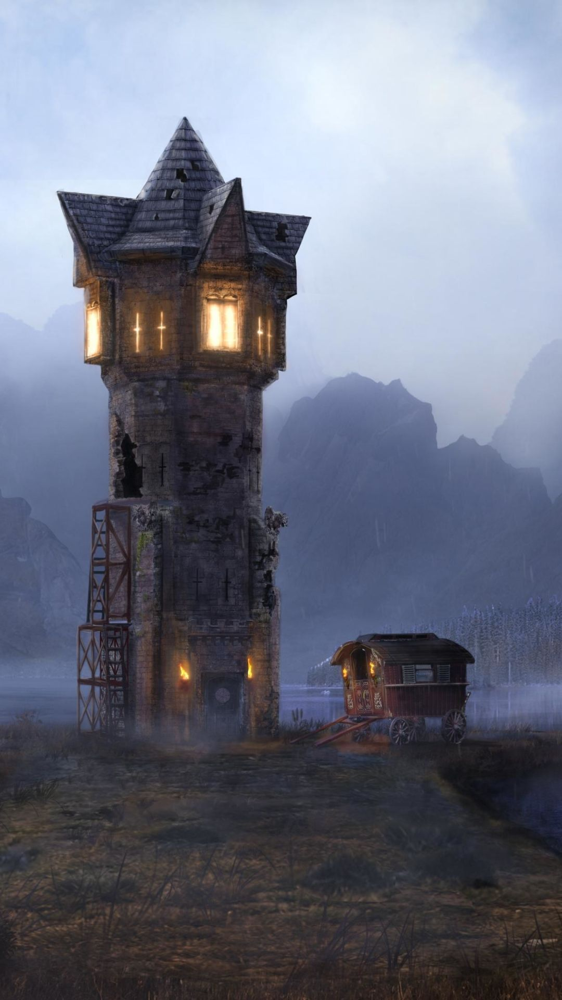

Sorcerer Alex LLC |
| Home | About Us | Services | DIRECTIONS |
|
 While my home may be hard to find, this guide will set you in the right direction. The easiest way is to head east from Copperton. The main path is safe to travel until you reach a settlement of dwarves. At that settlement, head through the forest to the south. In that forest, you will find a hill with a waterfall. My home will be atop that hill. Another path you could follow is by beginning in Silverwake, but this path will be more dangerous than the first. You will need to head north to the Shadow's Pass, so bring a lantern or enlightenment potions. Once you exit the pass, go west just a bit until you reach the Dragon's Den. Be careful not to wake her as you go further north. Past the den, you will find a large hill, and my tower sits on that very hill. Make sure to bring enough supplies to carry you through your adventure, and good luck, traveler! |
| © Alex Kennedy 2026. All Rights Reserved. |